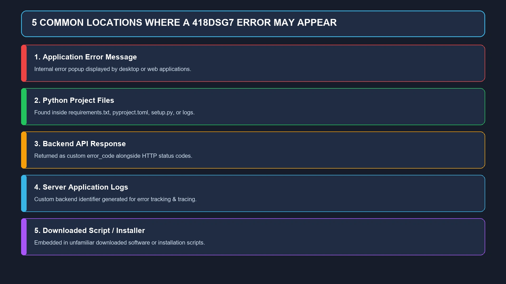
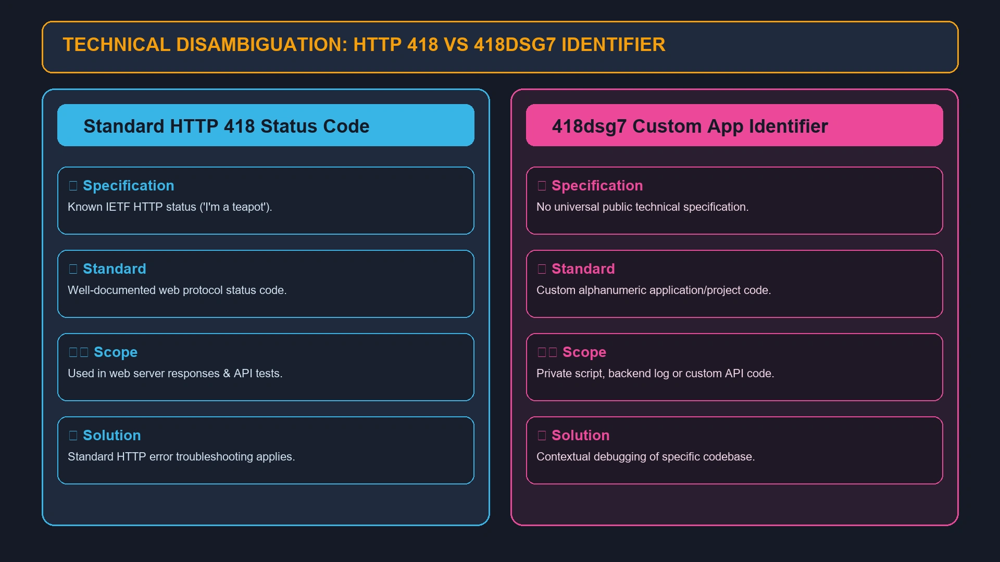
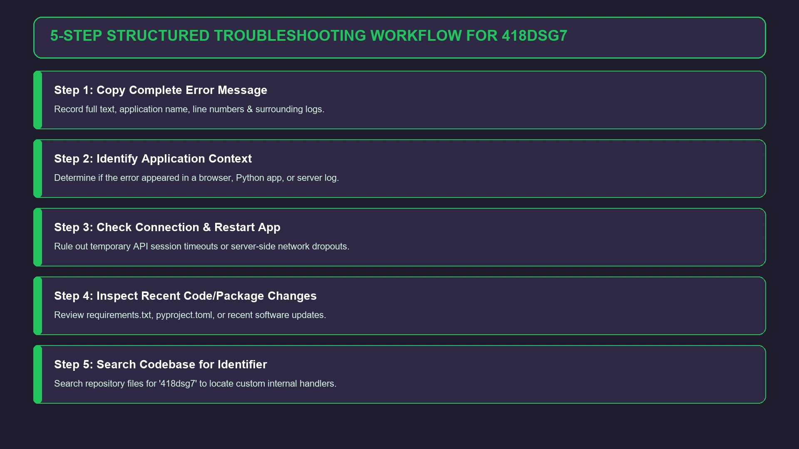

418dsg7 Error: Meaning, Possible Causes, Fixes, and What You Should Know
If you have encountered the 418dsg7 error, the first thing you will probably notice is that there is very little consistent information about it.

If you have encountered the 418dsg7 error, the first thing you will probably notice is that there is very little consistent information about it. The identifier looks like a conventional software or programming error, but 418dsg7 does not currently have a universally recognized definition in mainstream software documentation.
That distinction matters.
Some websites describe 418dsg7 as a new software product, while others connect it with Python, backend systems, automation, APIs, or application failures. However, these descriptions do not point to one clearly verified product or official specification. In fact, current discussions about 418dsg7 Python also acknowledge that the identifier could be a private module, internal project name, custom script, or simply a misidentified value.
Therefore, if you are trying to fix a 418dsg7 error, searching for one universal solution may waste time. The better approach is to identify where the code appeared, what application produced it, and what the complete error message says.
This guide explains what 418dsg7 may mean, how it differs from the standard HTTP 418 status code, why it sometimes appears in Python-related searches, and how to troubleshoot it safely.
What Is the 418dsg7 Error?
The 418dsg7 error is not currently established as a standard error code with one universal meaning.
Unlike well-documented codes such as HTTP 404, HTTP 500, Windows system error codes, or Python exceptions, there is no widely accepted technical specification that defines 418dsg7 as a particular failure.
That means the identifier could be generated by a specific:
- Application
- Backend service
- Internal development system
- Python project
- API
- Database
- Testing environment
- Configuration file
- Logging system
- Custom script
- Software package
The context surrounding the error is therefore more useful than the code itself.
For example, if a log contains:
Error: 418dsg7
that tells you very little by itself.
But if the same log says:
API request failed — 418dsg7 — authentication token expired
you immediately have a much better starting point.
Quick answer
What does 418dsg7 error mean?
There is no confirmed universal meaning for the identifier. It appears to be an application-specific, project-specific, or otherwise unverified alphanumeric identifier. The correct solution depends on the software, codebase, service, or environment where it appeared.
Why Is 418dsg7 So Difficult to Identify?
The main problem is the lack of consistent primary documentation.
A legitimate public software project normally has some combination of:
- Official documentation
- Developer or publisher information
- Source repository
- Version history
- Installation instructions
- Package information
- Release notes
- Support documentation
- Known issue tracking
The information currently circulating around 418dsg7 does not consistently provide these things.
One recent analysis of 418dsg7 Python specifically notes that different websites describe the identifier in different ways, including as a possible custom Python utility, internal project, experimental tool, or other identifier. It also warns against treating repeated online claims as proof that the technology is a recognized public package.
This is an important point when researching unfamiliar technical terms.
A claim appearing on multiple websites does not automatically make the claim authoritative.
Is 418dsg7 a Real Software Program?
There is currently no strong public evidence establishing 418dsg7 as a widely recognized software application or mainstream development framework.
Some articles describe “new software 418dsg7” as a project-management or automation platform, with features such as dashboards, task management, integrations, mobile access, and workflow automation. For example, one competitor page presents 418dsg7 as an online work-management application with automated tasks and integrations.
However, those claims should be treated as third-party descriptions rather than verified product documentation.
The more cautious interpretation is that 418dsg7 is an ambiguous identifier whose meaning depends on the context in which it was encountered.
It could be a real private application or internal tool without having a significant public footprint. Alternatively, the name may have been generated automatically or copied incorrectly.
Common Places Where a 418dsg7 Error May Appear

If you are seeing the term yourself, look at exactly where it appears.
1. Application error message
A desktop or web application may display an internal error identifier after something fails.
In that case, the application vendor or administrator is usually the best source for determining what the code represents.
2. Python project
The identifier may occur in:
requirements.txtpyproject.tomlsetup.pyPipfilepoetry.lock- Python source code
- Configuration files
- Application logs
Current discussions specifically recommend checking these files when investigating 418dsg7 Python.
3. API response
An API may return a custom error identifier along with an HTTP status.
For example:
HTTP 500 error_code: 418dsg7 message: Request processing failed
In this situation, 418dsg7 may simply be the application's internal reference number.
4. Server or application logs
Backend systems frequently use custom identifiers to make failures easier to trace.
A random-looking string does not necessarily represent the actual root cause.
5. Downloaded software or script
If you found 418dsg7 inside an unfamiliar downloaded program, script, or installer, do not immediately execute it simply because a website describes it as legitimate software.
Verify its source first.
Is 418dsg7 Related to Python?
This is one of the more common related searches.
The answer is: possibly, but there is no reliable evidence that 418dsg7 is an official Python package or framework.
Python has a huge ecosystem of packages and tools, so an unfamiliar identifier can easily be mistaken for a package name.
Current technical discussions about 418dsg7 Python recommend investigating the actual project rather than assuming the identifier represents a public Python library.
If you encounter it in a Python environment, check:
requirements.txt pyproject.toml setup.py Pipfile poetry.lock
You can also inspect installed packages with:
python -m pip list
and, when you know the package name:
python -m pip show PACKAGE_NAME
The goal is to determine where the identifier came from, not simply to search for a command that installs it.
Could 418dsg7 Be a Python Error Code?
It could be a custom error identifier inside a Python application, but it should not automatically be considered a standard Python error.
Python has documented exception types such as:
ValueErrorTypeErrorKeyErrorIndexErrorImportErrorModuleNotFoundErrorRuntimeErrorFileNotFoundErrorPermissionError
418dsg7 does not fit the normal naming pattern of Python's built-in exception classes.
A developer could nevertheless create an internal error code such as:
error_code = "418dsg7"
In that situation, the meaning comes from the application's own code.
The identifier itself does not explain the failure.
Does the “418” Mean HTTP 418?

This is where things become interesting.
HTTP 418 is a real HTTP status code associated with the famous “I'm a teapot” response. It originated from the Hyper Text Coffee Pot Control Protocol and became a well-known piece of developer culture.
That does not, however, prove that 418dsg7 is related to HTTP 418.
The 418 at the beginning of the identifier may be:
- A coincidence
- A developer reference
- A generated number
- A project identifier
- A version or build value
- An internal code
The dsg7 portion has no universally recognized meaning in this context.
Current discussion of 418dsg7 Python similarly treats the HTTP 418 connection as a possibility rather than an established explanation.
418dsg7 vs HTTP 418
| Identifier | Meaning |
|---|---|
| HTTP 418 | A known HTTP status associated with “I'm a teapot” |
| 418dsg7 | An unclear alphanumeric identifier |
| Python exception | A defined Python error/exception mechanism |
| Custom application code | May be created by individual developers |
So don't assume that an HTTP 418 troubleshooting guide will automatically fix a 418dsg7 error.
What Causes a 418dsg7 Error?
Because the identifier does not have one confirmed definition, there is no verified list of causes that applies to every situation.
However, if 418dsg7 is an application-generated error, common technical problems worth investigating include:
Configuration problems
An incorrect environment variable, configuration value, endpoint, or application setting can cause an internal error.
Dependency conflicts
A software update may introduce an incompatible library or package.
This is particularly relevant to Python applications, where dependency versions can affect application behavior.
Authentication failures
Expired sessions, invalid API credentials, missing tokens, or incorrect permissions can cause a custom application error.
Network problems
A service may fail when it cannot reach another server, API, database, or cloud service.
Server-side failures
The problem may be completely outside your computer.
For example, an application could return its own identifier when an upstream service becomes unavailable.
Corrupted local data
A damaged cache, configuration file, temporary file, or local database may interfere with an application's normal operation.
Incorrect software version
An older client communicating with a newer backend—or the reverse—can create compatibility problems.
Typographical or copied identifier
The simplest possibility is sometimes overlooked: the identifier may have been copied incorrectly.
That is why the complete original error message is so valuable.
How to Fix the 418dsg7 Error

Because there is no universal 418dsg7 specification, the safest solution is a structured troubleshooting process rather than blindly applying random fixes.
Step 1: Copy the Complete Error
Do not record only:
418dsg7
Save the entire message.
Look for:
- Application name
- Error description
- HTTP status
- File name
- Line number
- Timestamp
- Request ID
- Server name
- Python traceback
- Additional error codes
The surrounding information can reveal the actual problem.
Step 2: Identify Where the Error Occurs
Ask yourself:
Where did I see 418dsg7?
Was it:
- A website?
- A mobile application?
- Windows software?
- A Python terminal?
- A Git repository?
- An API response?
- A server log?
- A downloaded file?
This single detail can dramatically narrow the investigation.
Step 3: Restart the Application
If the error appears in an ordinary application, close it completely and reopen it.
For a temporary connection or session problem, this may be enough.
If the problem continues, move to deeper troubleshooting rather than repeatedly restarting.
Step 4: Check Your Internet Connection
If the application communicates with a cloud service, API, authentication server, or remote database, verify that your connection is working.
Try:
- Opening another website.
- Restarting the network connection.
- Checking whether the service itself is experiencing an outage.
- Testing from another network if appropriate.
A network failure can cause an application-specific error even though the displayed identifier looks unrelated.
Step 5: Check Recent Changes
Think about what changed immediately before the error appeared.
For example:
- Did you update the application?
- Install a new Python package?
- Change an API key?
- Modify a configuration file?
- Upgrade Python?
- Change a server?
- Move the project?
- Update dependencies?
- Change permissions?
If the error began immediately after one of these changes, the recent modification is a strong troubleshooting lead.
How Developers Can Investigate 418dsg7
If you are a developer, start with the source rather than generic search results.
Search the project
Search the entire repository for:
418dsg7
Look in:
- Python files
- JSON configuration
- YAML files
- Environment settings
- Dependency files
- API handlers
- Exception handlers
- Logging code
- Tests
- Documentation
You may find something similar to:
return {"error_code": "418dsg7"}
That would immediately tell you that the identifier is being generated by the application itself.
Check the Python traceback
If the error appears with a Python traceback, read the traceback from the bottom upward.
For example, the final exception may reveal:
ModuleNotFoundError ConnectionError PermissionError ValueError TimeoutError
In such a case, 418dsg7 may only be a wrapper or application-level identifier.
The underlying exception is usually much more useful for debugging.
Check dependencies
If the problem started after installing or updating packages, inspect your dependency tree.
Useful files include:
requirements.txt pyproject.toml poetry.lock Pipfile
Check which package introduced the behavior and whether the project expects a specific version.
Do not randomly downgrade or install packages without understanding the dependency relationship.
Should You Install a Package Called 418dsg7?
Not without verifying its source.
This is especially important if a webpage gives you a pip install command for an unfamiliar package.
Before installing anything, check:
- Who published it?
- Is there an official repository?
- Is there documentation?
- Does the package actually exist in the expected package registry?
- Is there a release history?
- Who maintains it?
- What dependencies does it install?
- Does the package match the software you are using?
Current guidance around 418dsg7 Python also recommends verifying the publisher, repository, documentation, release activity, dependencies, and source before executing unfamiliar software.
A missing public footprint does not automatically mean that something is malicious. A company can have private software that is never published publicly.
But lack of verification means you should not assume that an installation command is safe.
Is the 418dsg7 Error a Virus?
There is no evidence from the identifier alone that 418dsg7 represents a virus or malware.
An unusual error code is not proof of malicious software.
At the same time, the opposite assumption is also unsafe.
If 418dsg7 appeared after downloading an unknown executable, script, browser extension, or package from an untrusted website, investigate the file independently.
Check:
- Publisher
- File origin
- Digital signature where applicable
- Package source
- Dependencies
- Security scan results
- Installation behavior
Never grant administrator privileges to an unknown program simply because it claims to fix the error.
Why Are So Many Websites Talking About 418dsg7?
The search results surrounding this keyword are unusually inconsistent.
Some pages describe 418dsg7 as new software, while others discuss 418dsg7 Python or present it as an error code.
For example, one competing article describes 418dsg7 as an online work-management platform with task automation, dashboards, cross-device access, integrations, pricing tiers, and security features.
Meanwhile, a separate technical article takes a much more cautious position and says there is no consistently verified public identity for 418dsg7 as a mainstream Python package or framework.
That disagreement is itself useful information.
It suggests that readers should be careful about treating SEO articles as primary technical documentation.
A better research rule
When multiple websites describe an obscure technology differently, look for:
official documentation → source repository → package registry → developer/publisher → actual project files
before trusting detailed claims.
418dsg7 Error vs Standard Error Codes
Understanding the difference between standardized and application-specific errors makes troubleshooting much easier.
| Type | Example | Usually documented? |
|---|---|---|
| HTTP status | 404, 500, 418 | Yes |
| Python exception | ValueError, TypeError | Yes |
| Operating system error | FileNotFoundError | Yes |
| Database error | Vendor-specific codes | Usually |
| Application error | 418dsg7 | Depends on the application |
| Internal project identifier | Random alphanumeric string | Often private |
The key point is that not every error-looking string is a standardized error code.
What If 418dsg7 Keeps Appearing?
If restarting the software and checking connectivity does not help, document the problem.
Record:
- Exact error text
- Application name
- Application version
- Operating system
- Python version, if applicable
- Recent updates
- Recent configuration changes
- Time of failure
- Relevant log entries
- Steps that reproduce the issue
This information is much more useful to technical support than simply saying:
“I keep getting 418dsg7.”
If it is an internal application identifier, the software vendor, developer, system administrator, or repository owner may be the only reliable source for its exact meaning.
A Practical 418dsg7 Troubleshooting Checklist
Use this checklist before making major changes to your system:
- ☐ Copy the complete error message.
- ☐ Identify the application that generated it.
- ☐ Check whether the issue happens repeatedly.
- ☐ Restart the affected application.
- ☐ Check your internet connection if the app is cloud-based.
- ☐ Look for recent software or dependency updates.
- ☐ Check application logs.
- ☐ Search the project's source code for
418dsg7. - ☐ Review Python dependency files if it is a Python project.
- ☐ Check the underlying exception or HTTP status.
- ☐ Verify API credentials and permissions where relevant.
- ☐ Confirm that the software came from a trusted source.
- ☐ Avoid blindly installing packages or “fix tools.”
- ☐ Contact the application's developer or administrator if the code is proprietary.
Frequently Asked Questions About 418dsg7 Error
There is currently no universally verified definition for 418dsg7. It may be a custom application identifier, internal project code, Python-related identifier, API error reference, or another generated value.
No. The existence of HTTP status code 418 does not establish 418dsg7 as a standard HTTP status code. The two should not automatically be treated as the same thing.
Not as a standard Python exception. It could be a custom identifier used inside a Python application or project.
There is currently no strong public evidence establishing 418dsg7 as a widely recognized mainstream Python package or framework. If you encounter it inside a project, inspect its dependency files and repository.
There is no single confirmed fix. Start by recording the complete error, identifying the application that produced it, checking recent changes, examining logs, and finding the underlying exception or failure.
The connection is possible because the identifier begins with 418, but there is no reliable evidence proving that the complete term 418dsg7 was intentionally derived from HTTP 418.
The identifier alone does not establish that it is dangerous or malicious. If it is associated with unknown downloadable software or code, verify the source before installing or executing it.
One likely reason is that it may not be a public software product or standardized error code. It could be an internal identifier, private module, custom script, generated value, or misidentified term.
Search your project files for the identifier and inspect requirements.txt, pyproject.toml, setup.py, Pipfile, source code, configuration files, and logs. Also examine the full Python traceback to identify the underlying exception.
Final Verdict: What Is the 418dsg7 Error?
The safest conclusion is straightforward:
418dsg7 is not currently a universally recognized error code with one documented meaning.
The identifier may belong to a particular application, private software project, Python codebase, API, logging system, or internal development environment. Current online descriptions vary significantly, and some claims about 418dsg7 as a specific software product or Python framework are not backed by a clear primary source.
So, if you are searching for a 418dsg7 error fix, don't start by assuming that the number 418 tells you the answer.
Start with the context.
Find the complete message, identify the application, inspect the logs or source code, check recent changes, and determine whether 418dsg7 is actually the root cause or simply an internal reference attached to another failure.
That approach is more reliable than installing an unknown package or following an unverified “one-click fix.”
Until authoritative documentation identifies the term more clearly, treat 418dsg7 as an unverified or context-dependent identifier—not as a standardized error code.
For more such useful information read our site crackstube.blog
Enjoyed this Technology guide?
Explore more Tech articles or submit your own guest contribution on CracksTube.